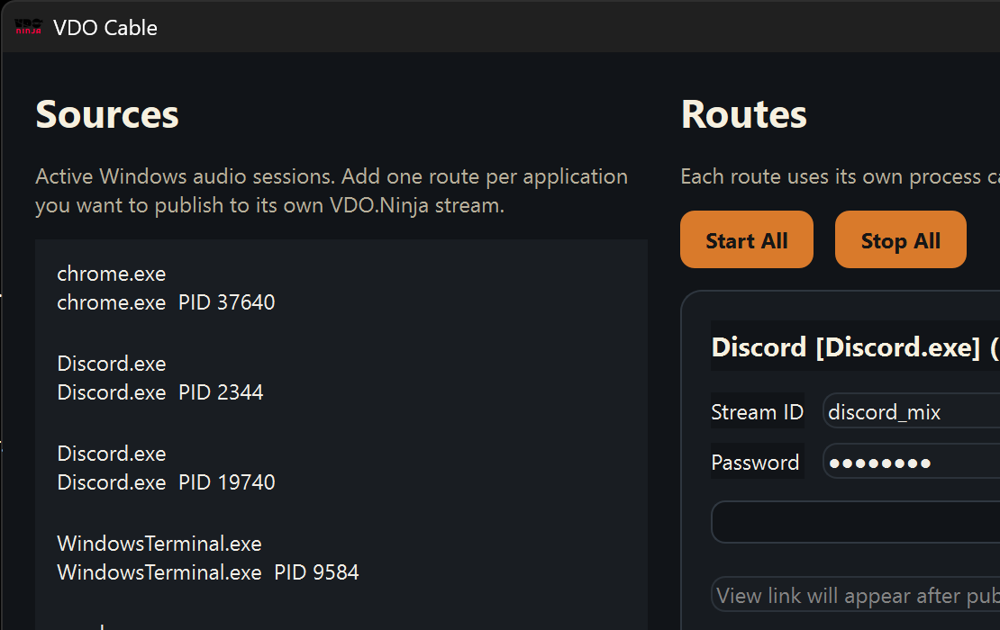

Per-app routing
Select multiple active Windows audio sessions and publish each app independently.
Windows Standalone Audio Router
 Powered by VDO.Ninja
Powered by VDO.Ninja
Publish audio from multiple Windows applications to separate VDO.Ninja stream IDs without a virtual driver. Each route gets its own WASAPI capture, websocket signaling session, and WebRTC audio publisher.

Select multiple active Windows audio sessions and publish each app independently.
Uses WASAPI process loopback instead of a signed virtual-audio driver stack.
Every route has its own websocket, one RTC session, and one Opus audio track.
The app blocks local Stream ID collisions up front and surfaces server collision alerts when another publisher already owns the ID.
Publish directly to stream IDs or place several routes inside the same VDO.Ninja room.
Installer, portable EXE, and ZIP ship with fixed filenames so latest-download links never move.
Release automation is wired for Authenticode signing plus VirusTotal submission before publish.
1
vdocable-setup.exe is the default signed installer with desktop and Start Menu shortcuts.
2
vdocable-portable.exe is a self-extracting build for quick local use without installation.
3
vdocable-win64.zip is the manual package for QA, scripting, and hash verification.
Fast gate builds the app, runs CTest, smoke-launches the UI, and verifies packaging outputs.
Playwright checks the GitHub Pages site and stable release links before docs deploy.
Qt deployment, NSIS installer creation, portable SFX creation, and stable alias generation are scripted.
Signing and VirusTotal submission are integrated into both local scripts and tag-triggered GitHub Actions.
WebSocket pinging is disabled, reconnect attempts back off, and the app avoids fast reconnect loops when signaling is unstable.